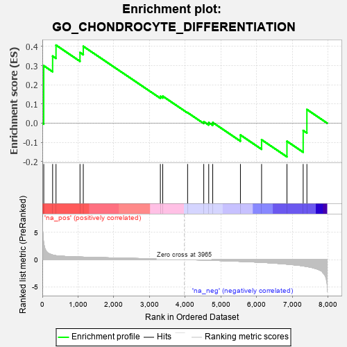
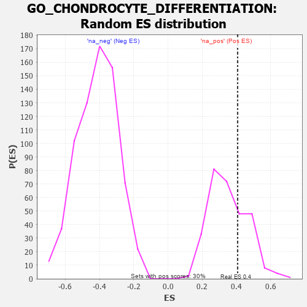

| | | Dataset | 7d |
| Phenotype | NoPhenotypeAvailable |
| Upregulated in class | na_pos |
| GeneSet | GO_CHONDROCYTE_DIFFERENTIATION |
| Enrichment Score (ES) | 0.4067557 |
| Normalized Enrichment Score (NES) | 1.1522353 |
| Nominal p-value | 0.30639732 |
| FDR q-value | 0.5389413 |
| FWER p-Value | 1.0 |
Table: GSEA Results Summary

Fig 1: Enrichment plot: GO_CHONDROCYTE_DIFFERENTIATION
Profile of the Running ES Score & Positions of GeneSet Members on the Rank Ordered List
| PROBE | GENE SYMBOL | GENE_TITLE | RANK IN GENE LIST | RANK METRIC SCORE | RUNNING ES | CORE ENRICHMENT | | 1 | SIX2 | | | 40 | 3.152 | 0.2994 | Yes |
| 2 | SHOX2 | | | 288 | 0.842 | 0.3497 | Yes |
| 3 | AXIN2 | | | 383 | 0.713 | 0.4068 | Yes |
| 4 | MEF2C | | | 1054 | 0.473 | 0.3683 | No |
| 5 | SNX19 | | | 1146 | 0.454 | 0.4007 | No |
| 6 | SMAD3 | | | 3303 | 0.105 | 0.1398 | No |
| 7 | SMAD7 | | | 3369 | 0.093 | 0.1407 | No |
| 8 | SFRP2 | | | 4065 | -0.018 | 0.0551 | No |
| 9 | WNT5B | | | 4517 | -0.098 | 0.0079 | No |
| 10 | FGFR3 | | | 4656 | -0.129 | 0.0029 | No |
| 11 | POC1A | | | 4768 | -0.151 | 0.0036 | No |
| 12 | FGFR1 | | | 5543 | -0.332 | -0.0617 | No |
| 13 | IFT80 | | | 6135 | -0.515 | -0.0863 | No |
| 14 | PTH1R | | | 6845 | -0.839 | -0.0944 | No |
| 15 | MSX2 | | | 7299 | -1.171 | -0.0382 | No |
| 16 | LOXL2 | | | 7403 | -1.269 | 0.0714 | No |
Table: GSEA details [plain text format]

Fig 2: GO_CHONDROCYTE_DIFFERENTIATION: Random ES distribution
Gene set null distribution of ES for GO_CHONDROCYTE_DIFFERENTIATION